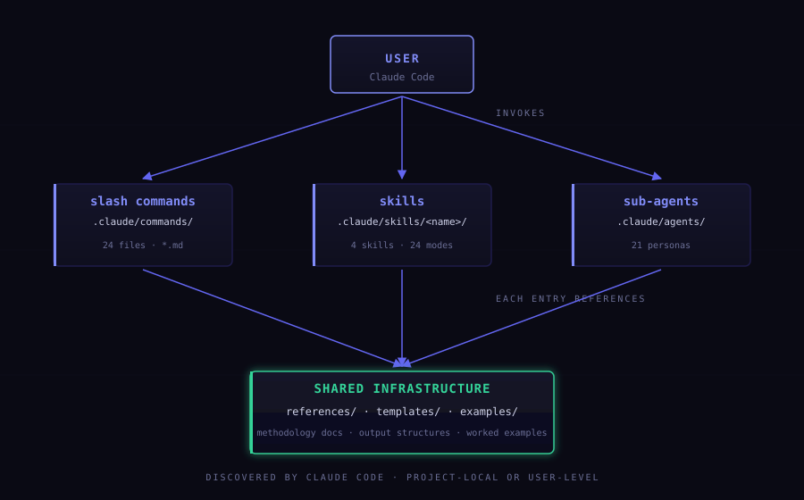
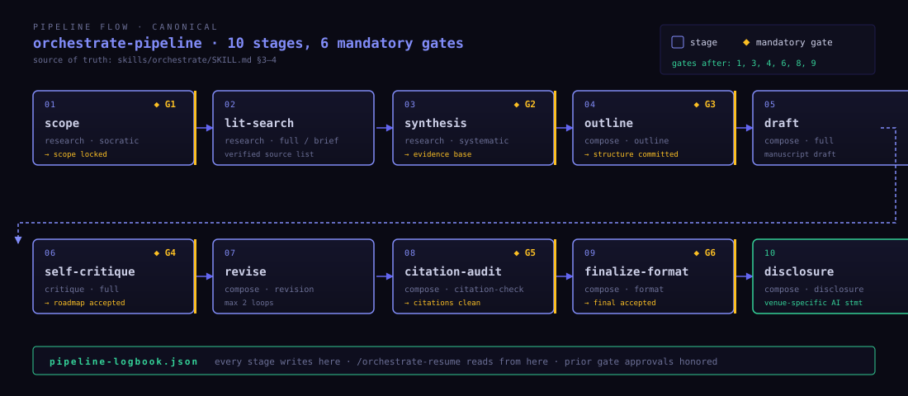

How the framework is put together.
Skills, sub-agents, slash commands, modes, checkpoints, provenance.
What lives where, how files are discovered, what happens at each gate.

Claude Code discovers each layer by convention: .claude/skills/<name>/SKILL.md,
.claude/commands/*.md, .claude/agents/*.md.
Symlink-installable per project or user-wide.
SKILL.md uses YAML frontmatter to declare name, description, trigger phrases, and the mode list.
Claude Code's skill loader reads this and surfaces the skill.
| Axis | Values | What it controls |
|---|---|---|
| Spectrum bias | Generative · Hybrid · Analytic | How the skill weights creativity vs verifiability vs questioning. |
| Deliverable | brief · report · dialogue · audit · format · disclosure | What artefact (if any) the mode produces. |
| Oversight | Low · Medium · High · Very High | How often the user is asked to approve mid-flow. |
| Triggers | natural-language patterns | What activates the mode when no slash command is used. |
Modes branch within a skill's logic.
24 modes across 4 skills. Canonical list in MODE_REGISTRY.md.
| Skill | Mode | Spectrum | Output | Oversight |
|---|---|---|---|---|
| research | brief | Analytic | 500–1500 word summary | Low |
| full | Hybrid | 3000–8000 word report, APA 7 | High | |
| socratic | Generative | refined question + plan | Very High | |
| systematic | Analytic | PRISMA 2020 review | Medium | |
| verify | Analytic | claim-by-claim verification | Medium | |
| annotate | Analytic | annotated bibliography | Medium | |
| evaluate | Hybrid | critical review of one source | High | |
| compose | full | Hybrid | complete manuscript draft | High |
| outline | Hybrid | outline + evidence map | High | |
| revision | Analytic | revised draft + response letter | High | |
| revision-triage | Hybrid | revision roadmap from reviews | Medium | |
| abstract | Analytic | abstract + keywords | Medium | |
| lit-section | Analytic | lit-review as integrated prose | Medium | |
| format | Analytic | LaTeX / DOCX / PDF / MD | Low | |
| citation-check | Analytic | citation consistency audit | Low | |
| disclosure | Analytic | venue-specific AI disclosure | Low | |
| critique | full | Hybrid | 5 reviewer reports + decision | High |
| quick | Analytic | brief editor first-impression | Low | |
| methodology | Analytic | in-depth methods critique | Medium | |
| re-review | Analytic | revision verification | Medium | |
| guided | Generative | issue-by-issue dialogue | Very High | |
| calibration | Analytic | reviewer-accuracy report | Medium | |
| orchestrate | pipeline | Hybrid | 10-stage end-to-end workflow | Very High |
| resume | Analytic | resume from pipeline-logbook | High |
Sub-agents are invoked sequentially or in parallel by their parent skill, with results passed through.
All v1.0.0 personas are skill-internal (skills/<skill>/agents/);
canonical list in AGENT_REGISTRY.md.
Canonical list lives in skills/orchestrate/SKILL.md §3–4.
Maximum two revision loops per deliverable; after v2, anything still open becomes Unresolved Issues.
page, section, or paragraph. The default and most common.timestamp or message reference from the session."synthesis across sources A, B, and C"). Always explicitly marked as such.The verification chain is what makes the difference between "fluent AI prose" and a defensible artefact.

24 commands ship with v1.0.0, one per mode.
Discovered by Claude Code from .claude/commands/*.md.
Model override is optional; otherwise the command inherits.
| Where | Convention | Example |
|---|---|---|
| File names | kebab-case | source-verifier.md |
| Skill names | kebab-case, single word where possible | research, compose |
| Mode names | kebab-case | systematic, revision-triage |
| Frontmatter keys | snake_case (per YAML convention) | trigger_phrases, model |
| Markdown headings | title case for major sections | ## Mode Taxonomy |
| Slash commands | /<skill>-<mode> | /research-verify |
Versioning is semantic: MAJOR breaks skill API or file structure; MINOR adds skills/modes/non-breaking enhancements; PATCH fixes prompts or docs.
See CHANGELOG.md.
.claude/skills, .claude/commands, .claude/agents) registered with Claude Code.github.com/drader/researcher_agent · v1.0.0 · CC BY-NC 4.0